- What is
ggplot2?- High-level graphics system
- Implements grammar of graphics from Leland Wilkinson
- Streamlines many graphics workflows for complex plots
- Syntax centered around main
ggplotfunction - Simpler
qplotfunction provides many shortcuts
- Documentation and Help
ggplot2 Usage
ggplotfunction accepts two arguments- Data set to be plotted
- Aesthetic mappings provided by
aesfunction
- Additional parameters such as geometric objects (e.g. points, lines, bars) are passed on by appending them with
+as separator. - List of available
geom_*functions see here - Settings of plotting theme can be accessed with the command
theme_get()and its settings can be changed withtheme(). - Preferred input data object
qplot:data.frame(support forvector,matrix,...)ggplot:data.frame
- Packages with convenience utilities to create expected inputs
plyrreshape
qplot Function
The syntax of qplot is similar as R’s basic plot function
- Arguments
x: x-coordinates (e.g.col1)y: y-coordinates (e.g.col2)data: data frame with corresponding column namesxlim, ylim: e.g.xlim=c(0,10)log: e.g.log="x"orlog="xy"main: main title; see?plotmathfor mathematical formulaxlab, ylab: labels for the x- and y-axescolor,shape,size...: many arguments accepted byplotfunction
qplot: scatter plot basics
Create sample data
library(ggplot2)
x <- sample(1:10, 10); y <- sample(1:10, 10); cat <- rep(c("A", "B"), 5)
Simple scatter plot
qplot(x, y, geom="point")
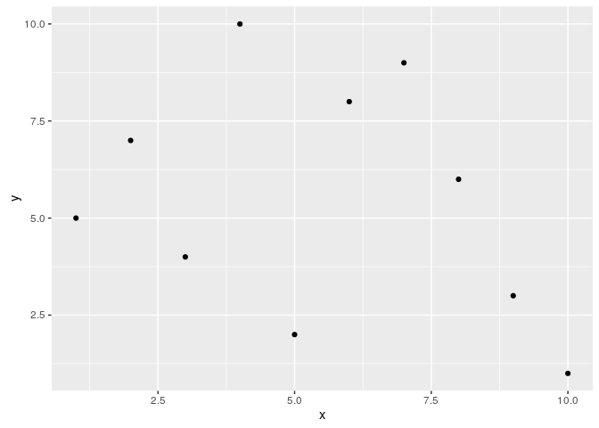
Prints dots with different sizes and colors
qplot(x, y, geom="point", size=x, color=cat,
main="Dot Size and Color Relative to Some Values")

Drops legend
qplot(x, y, geom="point", size=x, color=cat) +
theme(legend.position = "none")
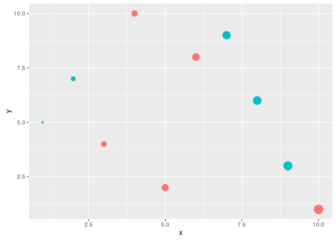
Plot different shapes
qplot(x, y, geom="point", size=5, shape=cat)
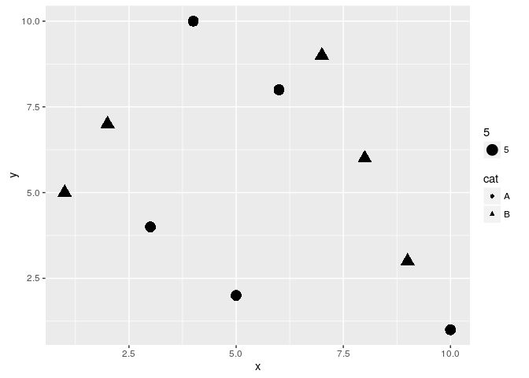
Colored groups
p <- qplot(x, y, geom="point", size=x, color=cat,
main="Dot Size and Color Relative to Some Values") +
theme(legend.position = "none")
print(p)
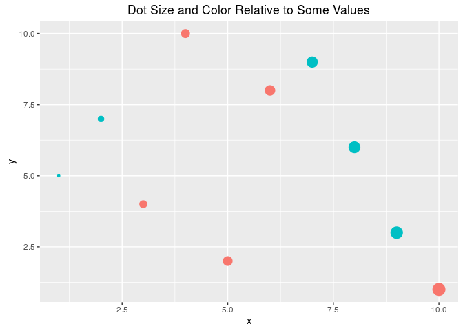
Regression line
set.seed(1410)
dsmall <- diamonds[sample(nrow(diamonds), 1000), ]
p <- qplot(carat, price, data = dsmall) +
geom_smooth(method="lm")
print(p)
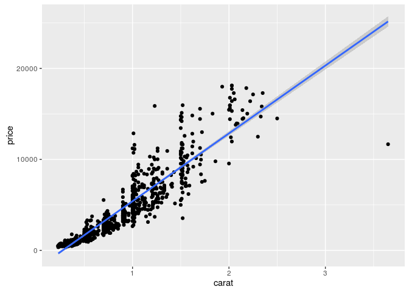
Local regression curve (loess)
p <- qplot(carat, price, data=dsmall, geom=c("point", "smooth"))
print(p) # Setting se=FALSE removes error shade
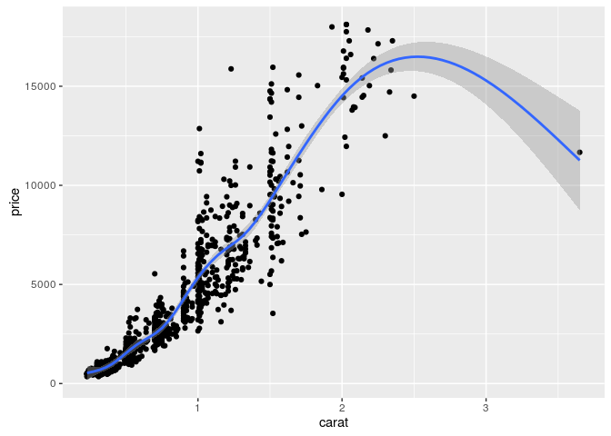
ggplot Function
- More important than
qplotto access full functionality ofggplot2 - Main arguments
- data set, usually a
data.frame - aesthetic mappings provided by
aesfunction
- data set, usually a
- General
ggplotsyntaxggplot(data, aes(...)) + geom() + ... + stat() + ...
- Layer specifications
geom(mapping, data, ..., geom, position)stat(mapping, data, ..., stat, position)
- Additional components
scalescoordinatesfacet
aes()mappings can be passed on to all components (ggplot, geom, etc.). Effects are global when passed on toggplot()and local for other components.x, ycolor: grouping vector (factor)group: grouping vector (factor)
Changing Plotting Themes in ggplot
- Theme settings can be accessed with
theme_get() - Their settings can be changed with
theme()
Example how to change background color to white
... + theme(panel.background=element_rect(fill = "white", colour = "black"))
Storing ggplot Specifications
Plots and layers can be stored in variables
p <- ggplot(dsmall, aes(carat, price)) + geom_point()
p # or print(p)
Returns information about data and aesthetic mappings followed by each layer
summary(p)
Print dots with different sizes and colors
bestfit <- geom_smooth(methodw = "lm", se = F, color = alpha("steelblue", 0.5), size = 2)
p + bestfit # Plot with custom regression line
Syntax to pass on other data sets
p %+% diamonds[sample(nrow(diamonds), 100),]
Saves plot stored in variable p to file
ggsave(p, file="myplot.pdf")
ggplot: scatter plots
Basic example
p <- ggplot(dsmall, aes(carat, price, color=color)) +
geom_point(size=4)
print(p)
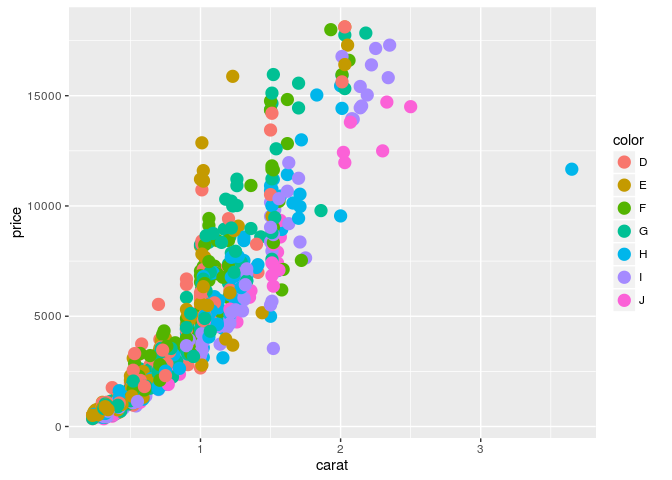
Regression line
p <- ggplot(dsmall, aes(carat, price)) + geom_point() +
geom_smooth(method="lm", se=FALSE) +
theme(panel.background=element_rect(fill = "white", colour = "black"))
print(p)
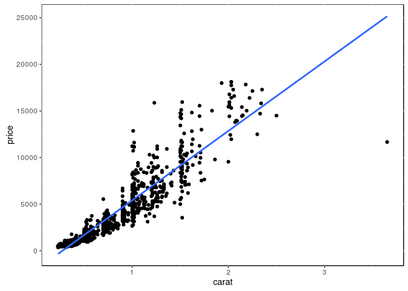
Several regression lines
p <- ggplot(dsmall, aes(carat, price, group=color)) +
geom_point(aes(color=color), size=2) +
geom_smooth(aes(color=color), method = "lm", se=FALSE)
print(p)
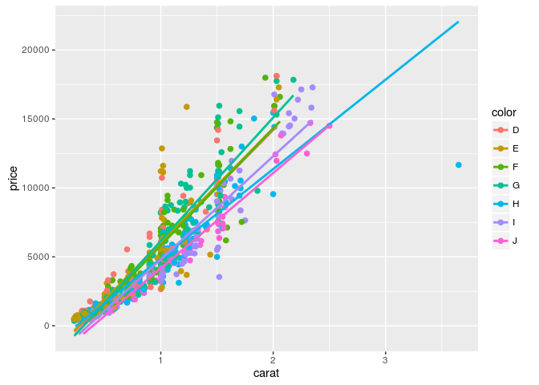
Local regression curve (loess)
p <- ggplot(dsmall, aes(carat, price)) + geom_point() + geom_smooth()
print(p) # Setting se=FALSE removes error shade

ggplot: line plot
p <- ggplot(iris, aes(Petal.Length, Petal.Width, group=Species,
color=Species)) + geom_line()
print(p)
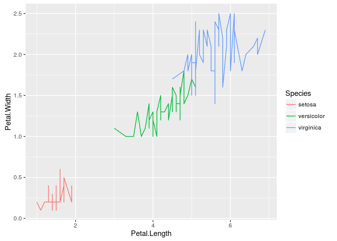
Faceting
p <- ggplot(iris, aes(Sepal.Length, Sepal.Width)) +
geom_line(aes(color=Species), size=1) +
facet_wrap(~Species, ncol=1)
print(p)
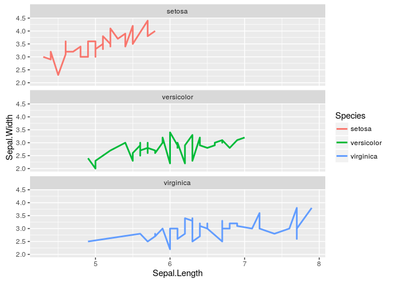
Exercise 3
Scatter plots with ggplot2
- Task 1: Generate scatter plot for first two columns in \Rfunction{iris} data frame and color dots by its \Rfunction{Species} column.
- Task 2: Use the \Rfunarg{xlim, ylim} functionss to set limits on the x- and y-axes so that all data points are restricted to the left bottom quadrant of the plot.
- Task 3: Generate corresponding line plot with faceting show individual data sets in saparate plots.
Structure of iris data set
class(iris)
## [1] "data.frame"
iris[1:4,]
## Sepal.Length Sepal.Width Petal.Length Petal.Width Species
## 1 5.1 3.5 1.4 0.2 setosa
## 2 4.9 3.0 1.4 0.2 setosa
## 3 4.7 3.2 1.3 0.2 setosa
## 4 4.6 3.1 1.5 0.2 setosa
table(iris$Species)
##
## setosa versicolor virginica
## 50 50 50
Bar plots
Sample Set: the following transforms the iris data set into a ggplot2-friendly format.
Calculate mean values for aggregates given by Species column in iris data set
iris_mean <- aggregate(iris[,1:4], by=list(Species=iris$Species), FUN=mean)
Calculate standard deviations for aggregates given by Species column in iris data set
iris_sd <- aggregate(iris[,1:4], by=list(Species=iris$Species), FUN=sd)
Reformat iris_mean with melt
library(reshape2) # Defines melt function
df_mean <- melt(iris_mean, id.vars=c("Species"), variable.name = "Samples", value.name="Values")
Reformat iris_sd with melt
df_sd <- melt(iris_sd, id.vars=c("Species"), variable.name = "Samples", value.name="Values")
Define standard deviation limits
limits <- aes(ymax = df_mean[,"Values"] + df_sd[,"Values"], ymin=df_mean[,"Values"] - df_sd[,"Values"])
Verical orientation
p <- ggplot(df_mean, aes(Samples, Values, fill = Species)) +
geom_bar(position="dodge", stat="identity")
print(p)
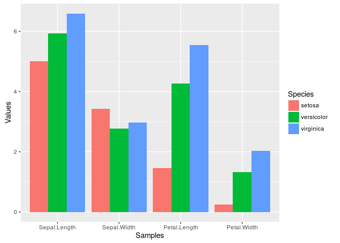
Horizontal orientation
p <- ggplot(df_mean, aes(Samples, Values, fill = Species)) +
geom_bar(position="dodge", stat="identity") + coord_flip() +
theme(axis.text.y=element_text(angle=0, hjust=1))
print(p)
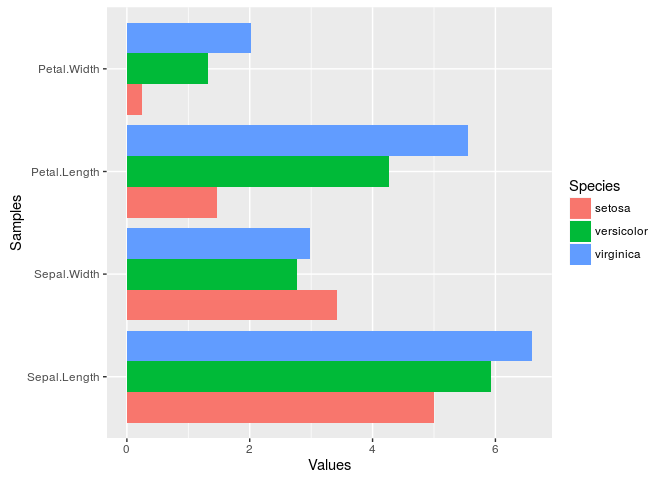
Faceting
p <- ggplot(df_mean, aes(Samples, Values)) + geom_bar(aes(fill = Species), stat="identity") +
facet_wrap(~Species, ncol=1)
print(p)
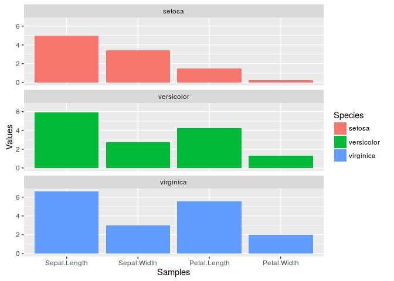
Error bars
p <- ggplot(df_mean, aes(Samples, Values, fill = Species)) +
geom_bar(position="dodge", stat="identity") + geom_errorbar(limits, position="dodge")
print(p)
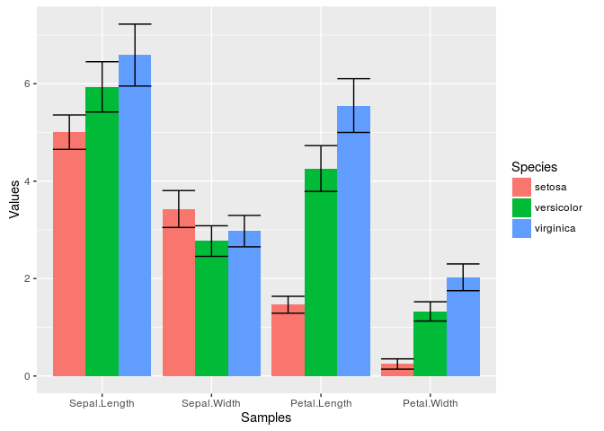
Mirrored
df <- data.frame(group = rep(c("Above", "Below"), each=10), x = rep(1:10, 2), y = c(runif(10, 0, 1), runif(10, -1, 0)))
p <- ggplot(df, aes(x=x, y=y, fill=group)) +
geom_bar(stat="identity", position="identity")
print(p)
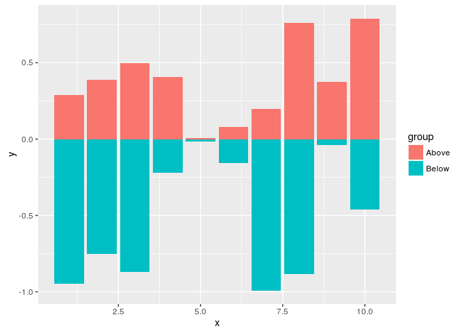
Changing Color Settings
library(RColorBrewer)
# display.brewer.all()
p <- ggplot(df_mean, aes(Samples, Values, fill=Species, color=Species)) +
geom_bar(position="dodge", stat="identity") + geom_errorbar(limits, position="dodge") +
scale_fill_brewer(palette="Blues") + scale_color_brewer(palette = "Greys")
print(p)
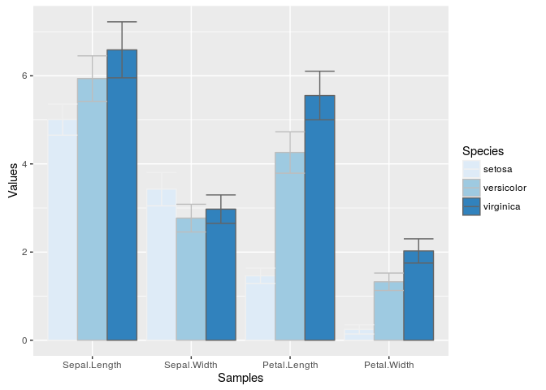
Using standard colors
p <- ggplot(df_mean, aes(Samples, Values, fill=Species, color=Species)) +
geom_bar(position="dodge", stat="identity") + geom_errorbar(limits, position="dodge") +
scale_fill_manual(values=c("red", "green3", "blue")) +
scale_color_manual(values=c("red", "green3", "blue"))
print(p)
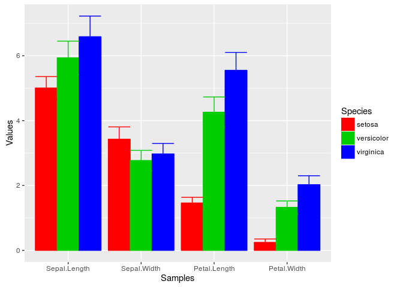
Exercise 4
Bar plots
- Task 1: Calculate the mean values for the
Speciescomponents of the first four columns in theirisdata set. Use themeltfunction from thereshape2package to bring the data into the expected format forggplot. - Task 2: Generate two bar plots: one with stacked bars and one with horizontally arranged bars.
Structure of iris data set
class(iris)
## [1] "data.frame"
iris[1:4,]
## Sepal.Length Sepal.Width Petal.Length Petal.Width Species
## 1 5.1 3.5 1.4 0.2 setosa
## 2 4.9 3.0 1.4 0.2 setosa
## 3 4.7 3.2 1.3 0.2 setosa
## 4 4.6 3.1 1.5 0.2 setosa
table(iris$Species)
##
## setosa versicolor virginica
## 50 50 50
Data reformatting example
Here for line plot
y <- matrix(rnorm(500), 100, 5, dimnames=list(paste("g", 1:100, sep=""), paste("Sample", 1:5, sep="")))
y <- data.frame(Position=1:length(y[,1]), y)
y[1:4, ] # First rows of input format expected by melt()
## Position Sample1 Sample2 Sample3 Sample4 Sample5
## g1 1 1.32942477 -1.2084007 -0.1958190 -0.4236177 1.7139697
## g2 2 0.92190035 -0.3471160 3.3238031 -1.2340292 -0.3985408
## g3 3 0.01878173 0.8007423 -0.1884464 -0.7419688 -0.5565102
## g4 4 1.95620993 1.7876584 -0.4402745 0.3671016 0.3966960
df <- melt(y, id.vars=c("Position"), variable.name = "Samples", value.name="Values")
p <- ggplot(df, aes(Position, Values)) + geom_line(aes(color=Samples)) + facet_wrap(~Samples, ncol=1)
print(p)
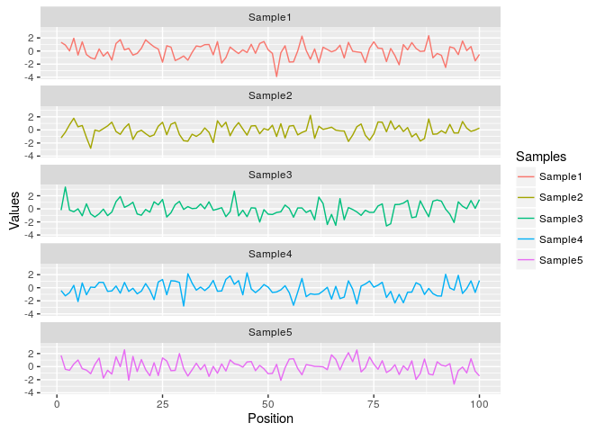
Same data can be represented in box plot as follows
ggplot(df, aes(Samples, Values, fill=Samples)) + geom_boxplot()
Jitter Plots
p <- ggplot(dsmall, aes(color, price/carat)) +
geom_jitter(alpha = I(1 / 2), aes(color=color))
print(p)
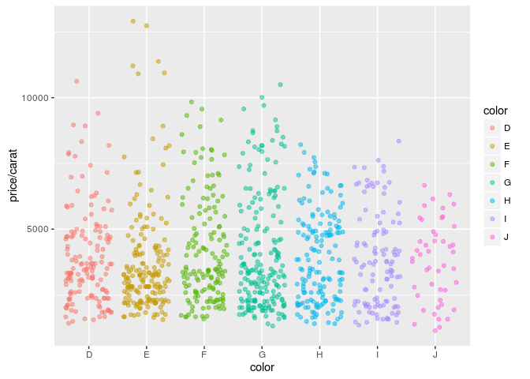
Box plots
p <- ggplot(dsmall, aes(color, price/carat, fill=color)) + geom_boxplot()
print(p)
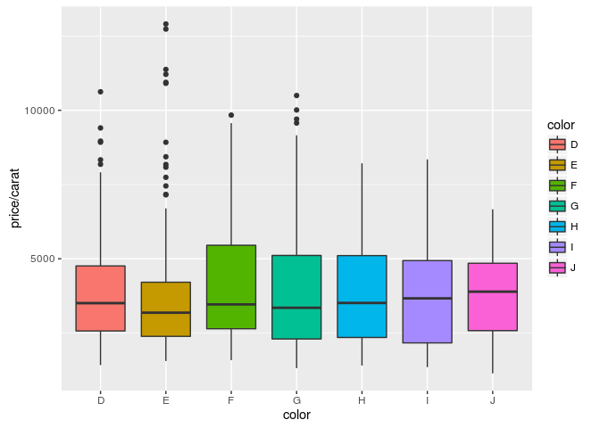
Density plots
Line coloring
p <- ggplot(dsmall, aes(carat)) + geom_density(aes(color = color))
print(p)
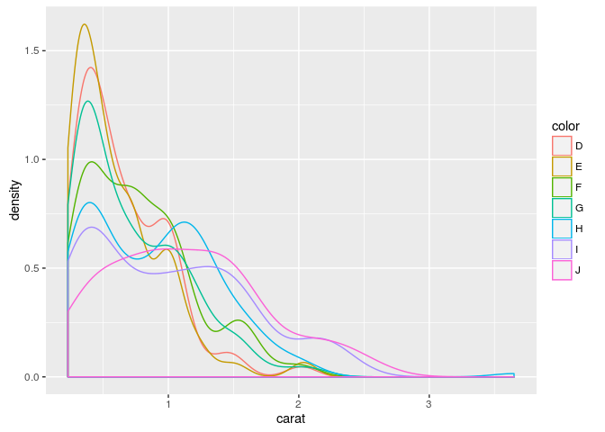
Area coloring
p <- ggplot(dsmall, aes(carat)) + geom_density(aes(fill = color))
print(p)
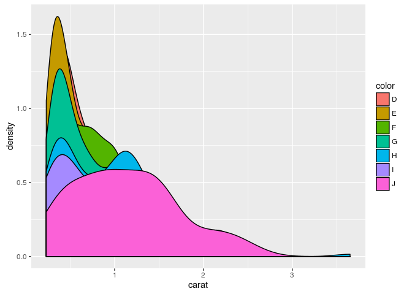
Histograms
p <- ggplot(iris, aes(x=Sepal.Width)) + geom_histogram(aes(y = ..density..,
fill = ..count..), binwidth=0.2) + geom_density()
print(p)
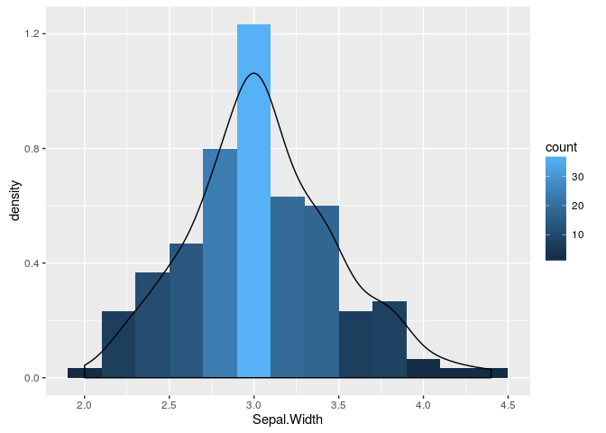
Pie Chart
df <- data.frame(variable=rep(c("cat", "mouse", "dog", "bird", "fly")),
value=c(1,3,3,4,2))
p <- ggplot(df, aes(x = "", y = value, fill = variable)) +
geom_bar(width = 1, stat="identity") +
coord_polar("y", start=pi / 3) + ggtitle("Pie Chart")
print(p)
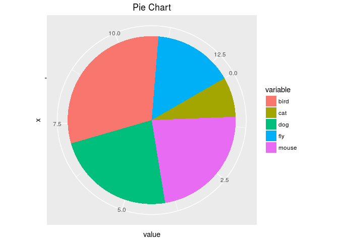
Wind Rose Pie Chart
p <- ggplot(df, aes(x = variable, y = value, fill = variable)) +
geom_bar(width = 1, stat="identity") + coord_polar("y", start=pi / 3) +
ggtitle("Pie Chart")
print(p)
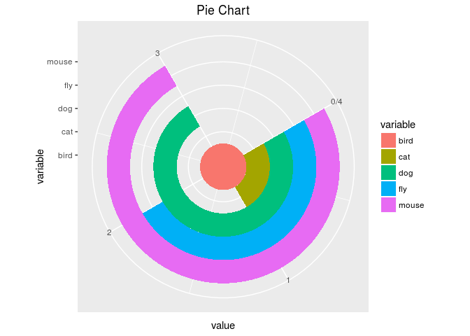
Arranging Graphics on Page
library(grid)
a <- ggplot(dsmall, aes(color, price/carat)) + geom_jitter(size=4, alpha = I(1 / 1.5), aes(color=color))
b <- ggplot(dsmall, aes(color, price/carat, color=color)) + geom_boxplot()
c <- ggplot(dsmall, aes(color, price/carat, fill=color)) + geom_boxplot() + theme(legend.position = "none")
grid.newpage() # Open a new page on grid device
pushViewport(viewport(layout = grid.layout(2, 2))) # Assign to device viewport with 2 by 2 grid layout
print(a, vp = viewport(layout.pos.row = 1, layout.pos.col = 1:2))
print(b, vp = viewport(layout.pos.row = 2, layout.pos.col = 1))
print(c, vp = viewport(layout.pos.row = 2, layout.pos.col = 2, width=0.3, height=0.3, x=0.8, y=0.8))
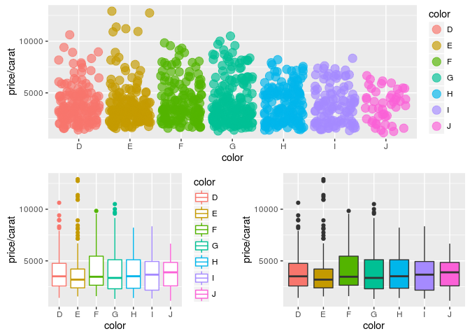
Inserting Graphics into Plots
library(grid)
print(a)
print(b, vp=viewport(width=0.3, height=0.3, x=0.8, y=0.8))
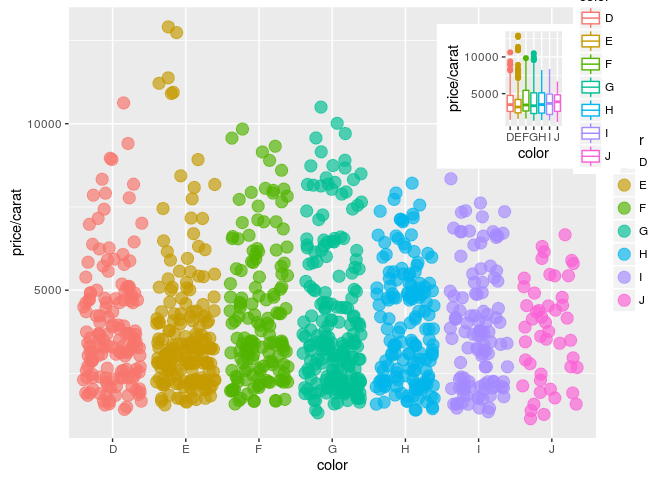